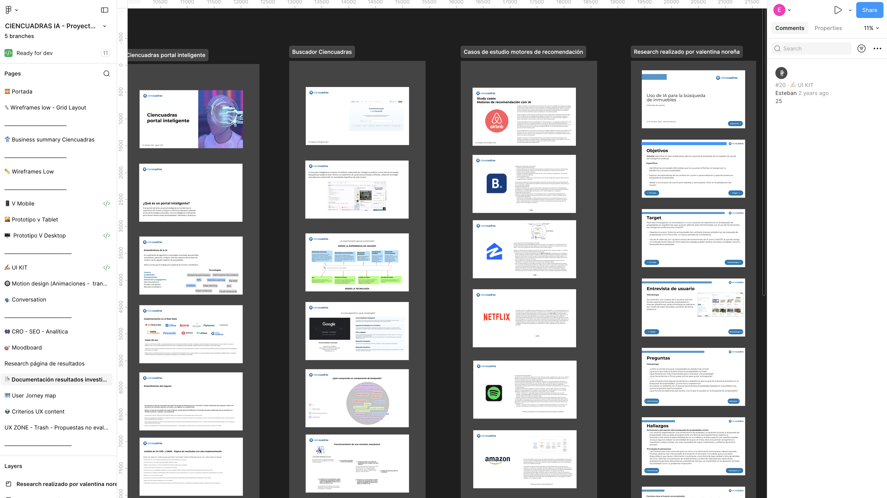
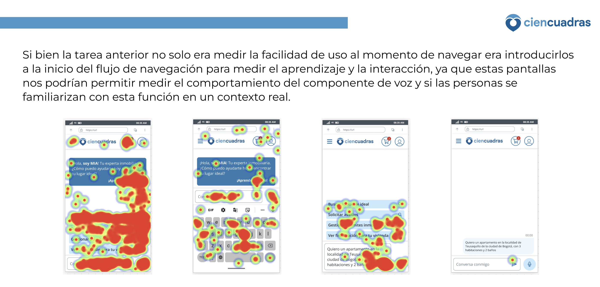
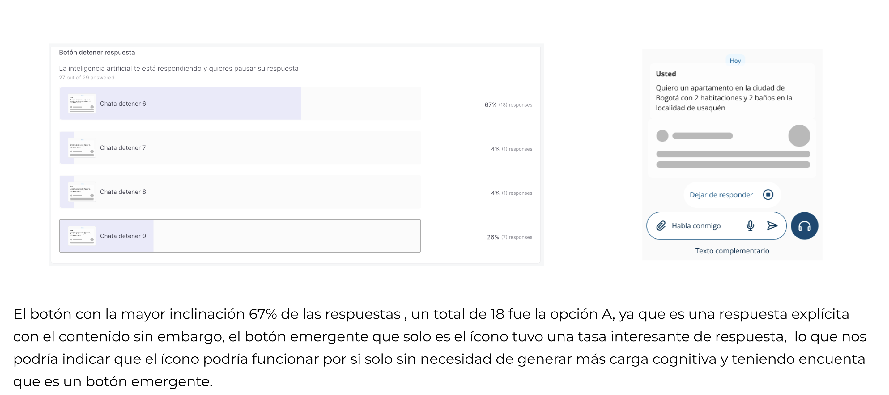
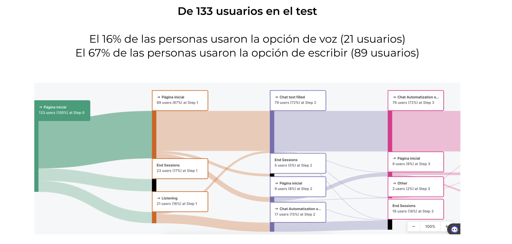

MIA — Motor de Inteligencia Artificial
Senior UX/UI Designer at Imaginamos for Grupo Bolívar (2023–2024). Revolutionizing the Colombian property market through conversational AI and data-driven matching.
CLIENT
Ciencuadras
ROLE
Lead Designer
TIMELINE
8 Months
SERVICE
IA Real Estate Strategy
Effective leads increase compared to legacy search engines.
HISTORIC MILESTONE
First AI sales in Grupo Bolívar history

Contexto y problema
Ciencuadras enfrentaba tres fricciones críticas: el buscador tradicional no segmentaba correctamente a los usuarios, se capturaban altos volúmenes de leads con baja tasa de conversión efectiva, y el negocio necesitaba incorporar IA como ventaja competitiva real. MIA nació como respuesta estratégica desde la dirección del Grupo Bolívar.
Inefficient Search
Users couldn't find what they actually needed using old filters.
Low Conversion
Qualified traffic was wasted due to lack of personalization.
AI Latency
The business needed a first-to-market AI strategic play.
01. Discovery & Research
Combiné cuatro fuentes para entender el problema en profundidad:

Entrevistas con usuarios
patrones de búsqueda y puntos de abandono
Análisis de comportamiento
datos de sesión, clics y conversión
Benchmark competitivo
referentes locales e internacionales de proptech e IA
Talleres con stakeholders
alineación de objetivos entre negocio, producto y tecnología
Definición del problema
"¿Cómo podemos conectar automáticamente al usuario correcto con la propiedad correcta, antes de que él mismo sepa que la está buscando?"
Criterios de éxito definidos con producto y negocio:
- check_circle Aumentar leads efectivos
- check_circle Reducir tiempo de decisión del usuario
- check_circle Habilitar y optimizar la operación gestionada por IA
sOLUTION
La estrategia de diseño de MIA estuvo guiada por un OKR central: aumentar la tasa de leads efectivos mediante hiperpersonalización basada en IA. Cada decisión de diseño se respaldó con datos reales: usé Google Analytics y Microsoft Clarity para identificar patrones de abandono, tasa de rebote y comportamiento en sesión, complementados con reportes del equipo de data science sobre calidad de leads y conversión.
Enfoque Basado en Datos
Los KPIs que monitoreé directamente — tasa de leads efectivos, conversión lead→venta, tiempo en sesión, retención y rebote — funcionaron como criterios de validación en cada iteración, asegurando que los cambios en la interfaz tuvieran impacto medible en el funnel de negocio y no solo en la experiencia percibida.
ANALYTICS
Google Analytics
BEHAVIOR
Microsoft Clarity
Design
Del wireframe al prototipo de alta fidelidad en tres fases: exploración conceptual, validación con usuarios reales e iteración con el equipo de datos para ajustar la lógica de retargeting a la interfaz.


Testing
Para asegurar la eficacia del Motor de Inteligencia Artificial, realizamos pruebas de usabilidad exhaustivas y análisis de datos en tiempo real. Esto nos permitió validar la intención del usuario y optimizar el flujo conversacional basado en el comportamiento real.
Heatmap & Eye-tracking Analysis

A/B Testing & Metrics

User Flow & Conversion Path

Key Insights
Insight: el problema no era el inventario, era la incapacidad del sistema de conectar al usuario correcto con la propiedad correcta.
Insight: la fricción no estaba en la búsqueda, estaba en el último paso. Diseñar ese momento era crítico.
Insight: el usuario quería control porque el sistema no demostraba inteligencia. MIA tenía que ganarse esa confianza con relevancia, no con más opciones.
Insight: la hiperpersonalización no solo mejora la conversión — construye hábito de uso.
Insight: un buen diseño de IA no optimiza solo la experiencia del usuario — optimiza todo el sistema alrededor de él.
Results
Conversion rate increase for leads compared to traditional search.
AI-driven sale in the history of Grupo Bolívar.
Daily active conversations within the first month of launch.
User satisfaction score (CSAT) for the conversational flow.
Lead Efficiency Growth
Legacy Search vs. MIA AI Engine (Mar - Nov 2024)
MIA logr%C3 un crecimiento sostenido del 70% tras la fase inicial de aprendizaje.
Aprendizaje y Reflexión
"Diseñar para IA no es diseñar la IA — es diseñar la confianza del usuario en ella. El reto más valioso fue aprender a facilitar conversaciones entre perfiles muy distintos y convertir esa tensión en decisiones de diseño claras."
Esteban ui